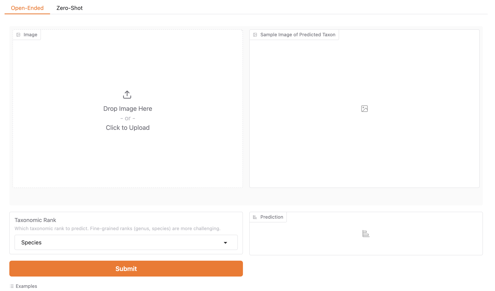
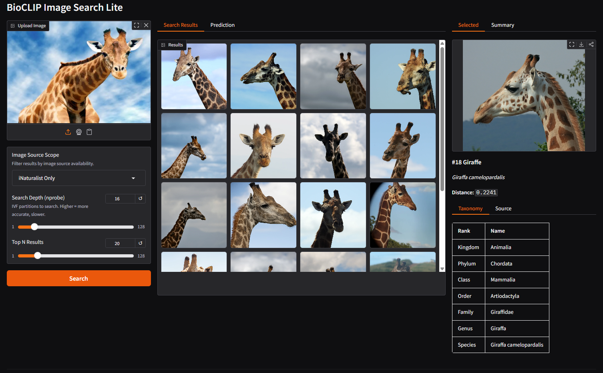
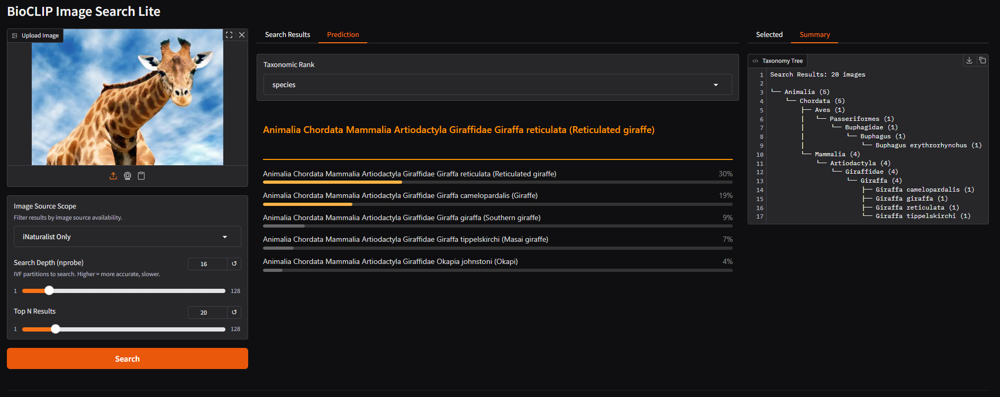

Try BioCLIP models directly in your browser. Upload images to classify species using zero-shot or open-ended methods, search for visually similar organisms, and explore the TreeOfLife Data.
Upload a photo of any organism and find visually similar images from TreeOfLife-200M using BioCLIP 2 embeddings.
Launch Demo →Identify species and classify images using open-ended or zero-shot methods with the latest BioCLIP 2 model trained on 214 million images.
Launch Demo →Classify images of organisms across plant, animal, and fungal species using the original BioCLIP model with taxonomic predictions.
Launch Demo →Our classification demos are hosted on Hugging Face Spaces and powered by Gradio, making them easy to use directly in your browser without any installation.
For programmatic access or batch processing, check out pybioclip.

BioCLIP Image Search Lite uses BioCLIP 2 embeddings to find visually similar images from TreeOfLife-200M. Images are fetched on-demand from their original source URLs (iNaturalist, EOL, BIOSCAN-5M, FathomNet, etc.).

